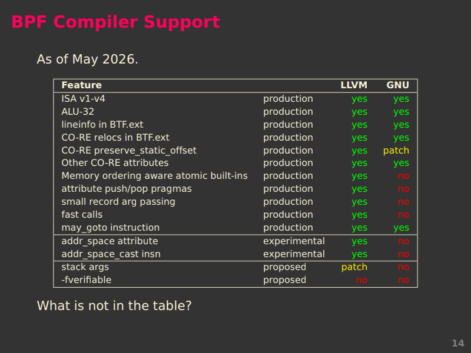
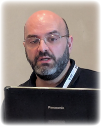
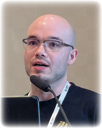
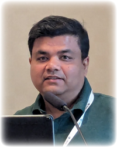

BPF support in GCC 16 and beyond
José Marchesi and the GCC-BPF developers opened the BPF track at the 2026 Linux Storage, Filesystem, Memory-management, and BPF Summit with a 90-minute summary of what has changed for GCC's BPF support in the past year. This kind of session has become something of a tradition. There were similar updates in 2025 and 2024. This time around, GCC seems to be closing in on feature parity with the LLVM toolchain — as the slides detail.
Usually, when the GCC-BPF developers come to conferences, they present for an hour, ask some questions, and that's the end of the discussion, Marchesi said. He wanted to do better this year, promising to remain reachable throughout the conference. He wanted to use the conference to discuss the remaining handful of fixes needed for GCC to pass the kernel's BPF self-tests, which were detailed in the latter half of the talk.
![[José Marchesi]](https://static.lwn.net/images/2026/josé-marchesi-small.png "José Marchesi")
There is now BPF support across the GNU toolchain, Marchesi continued. GCC, of course, but also projects like binutils, DejaGNU, GNU poke, and even GDB support BPF. Some of that "support" has not quite been kept up to date, however. GDB's BPF simulator, for example, is not used much and so has fallen out of date. That said, the other components of the toolchain are making good progress.
GCC 16.1 was
released on April 30. That was the first release to feature work from
Vineet Gupta, who joined the GCC-BPF team recently and is "already making the
rest of us look bad
" with the quality of his contributions. There is also now a
BPF-specific GCC mailing list, bpf@gcc.gnu.org, and a
weekly meeting
on the Software Freedom Conservancy's BBB instance on Mondays.
"It's fun. We have fun. If you are bored, Monday ...
"
Meanwhile, GCC is now able to pass an increasing number (601 of 5488)
[Faust wrote in to explain that I was mis-reading the output of the self-tests,
and that it is actually 601 tests out of 713, comprising 5488 sub-tests.] of the
kernel's BPF self-tests. Lots of the remaining problems apply to a large number
of tests, Marchesi said, so it's a relatively small set of things to fix to make
the self-tests pass. Even before that point, though, GCC does work to compile
many of the simple BPF programs used by systemd. Some distributions, such as
Gentoo, [Gentoo maintainer Holger Hoffstätte
says that Gentoo's GCC-BPF support is optional and not the default.]
use GCC as their default BPF compiler, which is great because it means
that the GCC developers receive actual bug reports.
GCC also has some work-in-progress support for the variant of BPF used by
Solana
— a blockchain project that uses BPF for on-chain contracts. "I don't
understand a lot about those things,
" Marchesi admitted. He also wasn't sure
why they were using a modification of BPF. But, since they are, it provides an opportunity to steal
some of their ideas. For example, Solana has 64-bit product, quotient, and
remainder instructions that might be worth incorporating into BPF proper.
Other convenience features of GCC have also seen progress. GCC now generates line information for BPF programs, so verifier diagnostics can reference specific lines. Gupta has been working on some ABI bugs, and there are various fixes to the code-generation logic, Marchesi said. In particular, memmove() and memset() are now inlined properly.
"Compile once — run everywhere" (CO-RE) relocations, which posed a problem for
GCC last year, have continued to be troublesome. Eventually, the GCC team
decided to just implement the same support for pushing and popping attribute
pragmas that Clang uses to support the feature. "We've had enough. So, we're
going to implement those, if only for structs.
"
As GCC comes closer to passing the kernel's BPF self-tests, the team has also added BPF tests to GCC's test suite, Marchesi said. The BPF support in the DejaGNU testing framework (added by Piyush Raj) has been helpful for that; now, running make check in the GCC repository will automatically download and compile an appropriate kernel, run it in a virtual machine, and use it to run a selection of BPF tests. GCC developers working on other areas of the toolchain don't need to know anything about BPF in order to test it. Hopefully, this should ensure that unrelated changes to GCC don't affect the verifiability of the BPF bytecode it generates.
In response to a question from the audience, Gupta clarified that these tests are run as part of GCC's continuous-integration (CI) testing, but that they could also be part of the kernel's CI tests. The GCC tests essentially make sure that changing the compiler with a fixed kernel version doesn't break things; the kernel tests should ensure that changing the kernel with a fixed GCC version doesn't cause regressions. The two uses could share code, however, Marchesi added.
He summarized the status of all of this work with one table:

The only thing that the assembled kernel developers thought was missing from the table was the status of support for indirect calls and indirect jumps; otherwise, the summary was accurate.
CO-RE problems
At that point, Cupertino Miranda stepped up to talk more about the details of GCC's support for CO-RE relocations. In order for BPF programs to be compatible with multiple kernel versions, they need to be able to access fields in kernel structures at the correct offset, even when those fields have been moved around. CO-RE relocations record, among other things, where the program needs to be updated to account for those changes. C headers indicate which structures need these relocations emitted using the preserve-index-access attribute.

Clang propagates structural attributes to contained structures, while GCC does not. This incompatibility caused problems for GCC's CO-RE relocations. The solution is to add support for pushing and popping a compiler pragma that instructs GCC to treat every encountered structure as having the preserve-index-access attribute.
There was a small discussion about how to implement and merge that in accordance with the wishes of the core GCC developers, before Miranda moved on to discussing bitfields. They are, as might be expected, an additional complication for CO-RE relocations. Andrii Nakryiko explained that the kernel's networking code sometimes has fields that switch from being defined as bitfields to being defined as integers, or vice versa. Clang does not currently handle this correctly — it will generate code to extract the bitfield, but it could be at the wrong offset — which is why the networking code uses a macro to encapsulate "bitfields" in CO-RE-relocatable structures and perform the accesses manually.
Miranda agreed that implementing proper support for relocatable bitfields was tricky, and asked the assembled developers whether it was important to actually implement, if the actual code used a macro to work around the problem already. Nakryiko opined that GCC should try to generate correct code, but that it should emit a warning when a bitfield appears in a CO-RE-relocatable structure. Miranda agreed that was fine.
Packed structures present some of the same problems for code generation that bitfields do. The networking code does have existing packed structures, Nakryiko said, so those also need to work. Although in the future, the networking subsystem will be moving toward more selective use of packed structures. There was a bit more discussion about the implementation, before Miranda and Nakryiko agreed to discuss further offline.
Types and optimization
At that point David Faust got up to speak about the
BTF type and declaration
tags problem that the team had discussed in 2025. GCC finally has support
for the same set of tags that Clang does,
but that support is slightly different than for Clang. The DWARF
debugging format is famously hard to extend, and in order to receive approval from
the other GCC maintainers, Faust had to use a different identifier for the added
tags. The
poke-a-hole utility, which needs to process this debugging information
as part of a kernel build, can recognize the new identifier, so it should not be
a big deal, Faust said. Other than that one difference, GCC and Clang should now
generate debugging information in identical formats for BPF programs.
This new support is available in GCC 16, so "we
can start using [it] in anger
".

The last item that the GCC team wanted to bring up was how to handle situations where an optimized build of the kernel changed the prototype of a function exposed to BPF. For example, GCC's optimizer can see when a function is only ever called with a fixed constant value in one argument, and eliminate that argument from the function. BTF relies on function signatures to allow BPF programs to find and call kernel functions, however.
That particular case is simple enough that it should be reconstructable from the DWARF debugging info, but some transformations are more complicated. For example, structures that are passed by value may have only the accessed fields passed — a transformation that DWARF cannot represent and that the upstream DWARF project is not interested in representing. GCC obviously knows what all of the relevant transformations are, Faust said, it just has nowhere to put that information so that the kernel can access it. If BTF can be extended to handle that information, and if the kernel build process can use the BTF directly generated by GCC, that would be sufficient.
Alexei Starovoitov mentioned that when Clang had added support for directly emitting BTF, the Clang developers copied the deduplication logic from libbpf. He was worried that if GCC did the same thing there would be three slightly different, separately maintained versions of the same logic, which would be messy. Realistically, he said, only the deduplicator in libbpf really works. Nakryiko said that there were also complications introduced by trying to deduplicate both weak and non-weak BTF map definitions.

Faust also asked whether it would make sense to add kfuncs that implement common
bit-manipulation compiler builtins, which are currently inlined wherever they
occur. __builtin_clz(), for example, expands to around 30 BPF
instructions "which is suboptimal
". Nakryiko agreed that this was
acceptable, and had actually been the motivation behind adding fast kfunc calls to
BPF in the first place — allowing the kernel to accelerate common operations in
BPF. He did ask that all of the bit-manipulation functions be
added at once, so that they would have matching names; Faust readily agreed.
Gupta finished up the session by explaining some of the differences between GCC's generated code and LLVM's generated code; both kinds of code are valid, but the verifier has an easier time working with LLVM's version. He plans to address part of the problem by adding a cost model for BPF so that GCC's optimizer produces more LLVM-like code, and part of it by expanding what the verifier can understand to better accommodate GCC's output. In all, GCC support for BPF seems to be coming along nicely. It is already usable for simple real-world programs, and will only become more so if more projects start using it and filing bug reports to guide the remaining work.
| Index entries for this article | |
|---|---|
| Kernel | BPF |
| Conference | Storage, Filesystem, Memory-Management and BPF Summit/2026 |